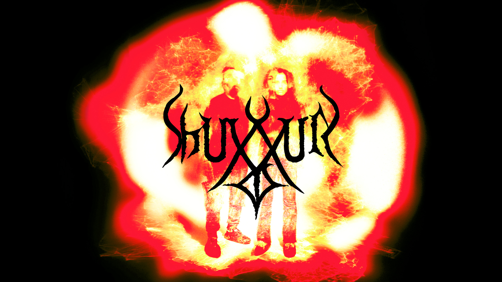

SHUXXUR English| Russian | contact
SHUXXUR is an audiovisual duo by Arash Azadi and Hasmik Badoyan. It was formed in 2019 in Yerevan, Armenia. Their first collaboration was at the premiere of Azadi's album "Mathematical Labyrinth" at Poligraf. They did a large scale audiovisual performance at Planetarium 1 at Saint Petersburg during the Mawaheb festival in 2021. They have performed at GeekPicninc festival in Moscow in 2022 and recorded a live album at Garage Studios. Their work is centered around indeterminancy by using generative art tools for sound and visuals. As free improvisation is the core of their practice, the outcome of the performances or the recordings are always unknown. Sonically their work can be considered on the margins of Noise Music and sound art. They mainly use laptops to generate sound and visuals.
Arash Azadi Biography:
Born in 1994 in Hamedan, Iran, Azadi began studying classical Persian setar at the age of nine. In 2012, he enrolled in Armenia's Yerevan State Conservatory, where he majored in composition and began mastering the ins and outs of the visual programming language Max/MSP through an online course offered by the Massachusetts College of Art. His most recent works fall under the umbrella of electroacoustic and experimental music, and are often accompanied by audio-visual effects, performance art or improvised dance and theatre. With a background in math and computer sciences, Azadi has also explored ways to combine modern approaches to sound with acoustic and folk music. To date, his works have been performed in France, Italy, Germany, US, Greece, Georgia, Iran and Armenia. He has performed live at festivals such as Berlin CTM Festival, Unsound Festival Yerevan Edition, Urvakan Festival and Synthposium Festival. In 2019 he was selected as one of SHAPE Platform artists and did a multi-channel audio installation and a commissioned piece for cello and tape for Musikprotokoll festival in Austria. His albums have been released by labels such as Establishment Records in Berlin and Off-Record in Belgium. Since 2020 he runs his own label Structured Experience. He was an artist-in-residence at Garage Studios for 2021-2022 and taught at HSE Art and Design University in Sound Art and Sound Design faculty. This year he won the international composition award at the Sayat Nova Competition by AGBU in New York and his piece “The Chain” for ensemble and voice will be performed at Carnegie Hall October 29, 2022.
Hasmik Badoyan Biography:
Multimedia artist who works at the intersection of sound, moving image and text. Hasmik was born in Yerevan, Armenia. She graduated from the Lobachevsky State University in Nizhny Novgorod, majoring in Cultural Studies and received a Master's degree from Moscow School of Social and Economic Studies. From 2017 until 2020 she lived in Yerevan, Armenia and worked as a curator at HAYP Pop Up Gallery, where she co-curated pop-up exhibitions, residencies, educational programs and more. After returning to Russia in 2021 Hasmik enrolled at Rodchenko School of Photography and Multimedia where she studies in the class of Kirill Savchenkov, Polina Kanis, Andrey Kachalyan and Boris Klyushnikov, as well as Andrey Smirnov's laboratory.
Since 2019 Hasmik has been playing audiovisual sets with composer Arash Azadi, with whom they created their duo SHUXXUR.
Links:
Bandcamp
SoundCloud link
Youtube
Designed by SHUXXUR